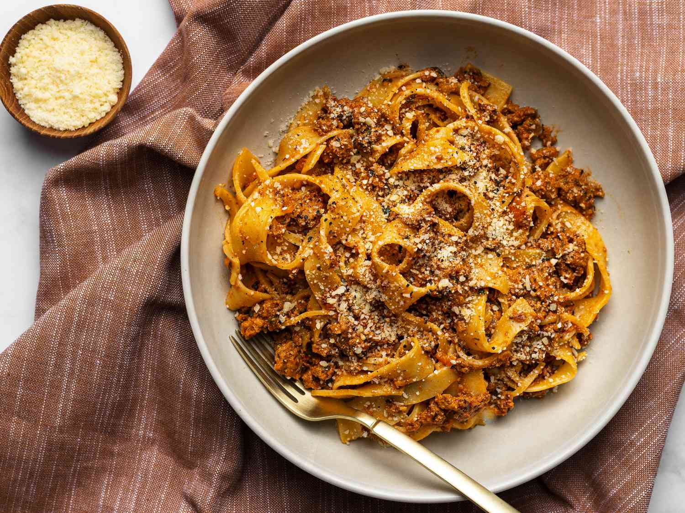

Spaghetti Bolognese

A classic Italian pasta.
Ingredients
- 500g beef mince
- 2 medium onions
- 2 garlic gloves, finely chopped
- 2 celery sticks, finely chopped
- 4 rashers of bacon
- 700g tomato passata
- 3 cups beef broth
- 350g pasta
Preparations
- Make the sauce by whisking together the Worcestershire sauce, oyster sauce, and soy sauce.
- Cut the pork belly into 3cm slices.
- Cut the onion, carrot and cabbage into thin slices.
- Remove the stems from the shiitake mushrooms, then cut the caps into thin slices.
Instructions
- In a saucepan, cook the garlic and onion for 2 minutes until translucent.
- Add beef. Fry until browned.
- Add passata. Add beef stock and remaining ingredients.
- Bring to a boil, then reduce to a gentle simmer and cover with a lid. Cook for 1 hour 15 minutes, stirring occasionally, until the sauce is thick and rich.
- When the sauce is nearly ready, cook spaghetti in a separate pot.
- Drain the spaghetti and either stir into the sauce, or serve the sauce on top. Serve immediately.
To serve, you can optionally add grated parmesan on top.